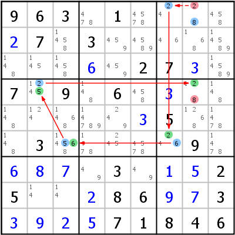

HoDoKu Lösungstechnik-Index: Beispiel für "Alternate Inference Chain Type 2"

Originales Sudoku:
963.1.....7.3..........27..7.9.6..........5...3.....9.....3...25...86..3....71846
Verwenden Sie die folgende Zeile um das Sudoku in HoDoKu zu laden:
:0708:28:963.1....+27.3........+6.27+3.7.9.6.+3.......+35...3.....9.+6+8+7.3.+1+525..+286+9+73+3+9+2+571846::218 848:
Die folgende Darstellung kann per Zwischenablage in die meisten Sudoku-Programme eingefügt werden:
.------------------.------------------.------------------. | 9 6 3 | 478 1 4578 | 24 28 458 | | 2 7 1458 | 3 459 4589 | 46 168 14589 | | 148 145 1458 | 6 459 2 | 7 3 14589 | :------------------+------------------+------------------: | 7 1245 9 | 148 6 458 | 3 128 148 | | 148 124 1468 | 14789 249 3 | 5 1268 1478 | | 148 3 14568 | 1478 245 4578 | 246 9 1478 | :------------------+------------------+------------------: | 6 8 7 | 49 3 49 | 1 5 2 | | 5 14 14 | 2 8 6 | 9 7 3 | | 3 9 2 | 5 7 1 | 8 4 6 | '------------------'------------------'------------------'
Darstellung des Lösungsschrittes:
.--------------------.------------------.--------------------. | 9 6 3 | 478 1 4578 | *24 *-28 458 | | 2 7 1458 | 3 459 4589 | 46 168 14589 | | 148 145 1458 | 6 459 2 | 7 3 14589 | :--------------------+------------------+--------------------: | 7 *1245 9 | 148 6 458 | 3 *12-8 148 | | 148 124 1468 | 14789 249 3 | 5 1268 1478 | | 148 3 *14568 | 1478 245 4578 | *246 9 1478 | :--------------------+------------------+--------------------: | 6 8 7 | 49 3 49 | 1 5 2 | | 5 14 14 | 2 8 6 | 9 7 3 | | 3 9 2 | 5 7 1 | 8 4 6 | '--------------------'------------------'--------------------' AIC 8- r1c8 -2- r1c7 =2= r6c7 =6= r6c3 =5= r4c2 =2= r4c8 -2 => r1c8<>2, r4c8<>8
Copyright © 2008-12 von Bernhard Hobiger
Zuletzt geändert am 5. Mai 2025 von shorty#3746
(basierend auf dem 1to9only Github-Repo)
Alles Material auf dieser Site unterliegt der GNU FDLv1.3.